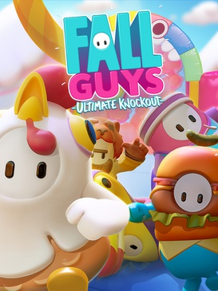

Simulation · 2020
Fall Guys
Physics comedy as a battle royale; sixty beans, one crown.

Cover: Wikipedia: Fall Guys cover.jpg
Facts
- Released
- 2020-08-04
- Genre
- Party
- Category
- Simulation
- Platforms
- Nintendo, PC, PlayStation, Xbox
- Developers
- Mediatonic
- Publishers
- Epic Games